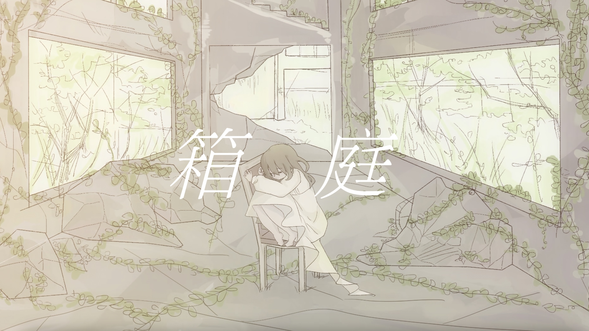

箱庭

Art by Moshi
作品介绍
《箱庭》绝对是我作曲最好的一首歌，
它是一首由白、褪色的淡黄、所构成的歌。
它像纸的颜色。
中文歌词在这里不是翻译，而是我确实写了两种语言的歌词（词格对的上的）
在我所有作品中，它拥有最温柔、最感性的温度，
谈不上忧伤，而是一种静静流动、近乎无声的柔软情绪。
这首歌诞生在大学最初的秋天，也是刚满18岁不久。
窗户有些水汽，风是柔的，那时的情绪也刚好相同，
温柔，却略微感性，安静，却并非悲伤。
这首最初的名字其实是「残差」。
那时候的我想象的是一种在成年之前强烈情绪抒发后“被滤去后剩下的量”
但我心里像装着一座小小的箱庭，里面摆放着褪色的记忆、散落的光点、沉静的颜色。
歌词里的“褪色的回忆”“被随意收起的碎片”隐约呼应着 Ipomoea alba 系列的情绪，却又是全新的开始。
它有一段并不显眼、却很重要的前身。
它最初其实是我在 2021 年年初写的《Hypohyphnotic》的重制。
当时我以为自己只是想把那首旧作重新拾起来，让它变得更成熟一点。
但后来我只保留了副歌的和声走向和副歌结构，还有完整照搬了那段间奏，其他全都没有用。
因为在真正动笔时，我发现自己已经无法回到原来的情绪里了。
Hypohyphnotic 所属于的是另一个阶段、另一种质地，而我当时的心境已经变得更轻、更柔、更清晰。
我意识到，如果继续沿着旧的轨迹走，这首歌就不会长成它想要的样子。
这首歌前半段只有钢琴，像闭上眼时水气轻轻落下；
副歌加入清音吉他，情绪变得清亮却仍然轻盈；
间奏以后，木吉他、鼓、贝斯逐渐展开，让箱庭真正拥有了脉搏。
第二次副歌是完整的前卫核编配，却依然温柔不锐利，是一种自然的扩散。
之后的 Solo 后，落回带着日光感的钢琴，是我心里对这首歌最理想的结局。
特别的是，《箱庭》在我还没有七弦琴、吉他都不太会弹的时候就被写出来了（不如说这是最后一首没实录的歌？在此之前其他歌也是这样），所以用的midi假吉他现在看来十分难听。
但我偶尔回头想，至今仍觉得这是我从 2020 年开始写歌以来，作曲上最好的一首。
因此我一直计划实录吉他，再做一次真正的混音（短期内就会做）。
甚至我还写过一个非前卫核版本，用木吉他作为副歌的律动，那个更像黄昏时的箱庭，未来很大概率会完成它。
《箱庭》不属于任何系列，但它的确携带着从Ipomoea alba走来的微弱余光。
它是一首关于柔软、初秋的宁静与感性的小歌谣。
歌词（Part 1）
雨が降っているような
浅い窪みに隠れていた
もう夕日の色は見えない
枯れてはまた入れ替わる花
片隅に打ち捨てられていた
秋の朔に踏み出した
色の重なり合い、曇った硝子の反射
カメラの光に振り向いたこと
夜明け前の輪郭に縋りついていた
羽よりも軽い心臓
重たいものだけ消えてゆく
感性は水面に浮かんでいた
色褪せた人たちは
ほこりのようにどうでもいいんだ
できると思っていたことさえ
湿った満開の弁、箱庭の淡い言葉
溶けた唄と冗長な刹那
色の重なり合い、曇った硝子の反射
夕日に照らされた眠い顔から
歌词（Part 2）
空中零星雨点似乎飘落
隐匿于浅洼倒影 反射落寞
已经看不到夕阳的颜色
时而枯萎后更换的花朵
日日积攒后碎裂 歇于角落
踩着树叶 脚步踏向秋末
色彩的重叠后 雾气围绕
模糊玻璃反射的夜色
在我镜头下光辉中 谨默的那一刻
黎明到来以前 那个轮廓
闭上眼睛 如此执拗着
相比羽毛更轻的心脏里
似而沉重却缓慢 消失殆尽
所谓的感性于水面浮起
已经褪色了许久的回忆
大部分碎片已然 随意收起
即使那时以为自己可以
潮湿而满开的花瓣
箱庭之中那清淡的话语
溶解的歌谣与那背后冗长的刹那
色彩的重叠后 雾气围绕
模糊玻璃反射的夜色
被夕阳余晖洒下融化在我指尖那一刻